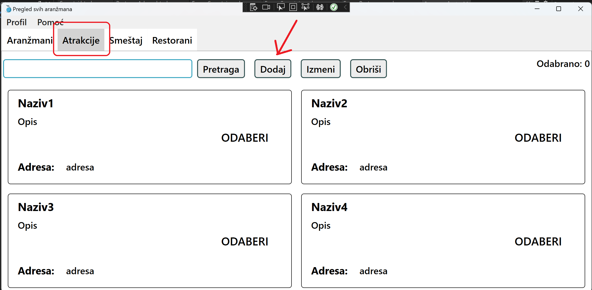
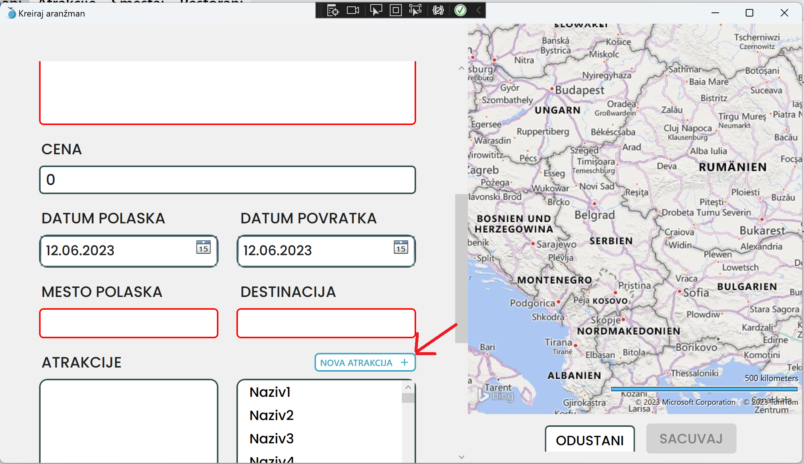
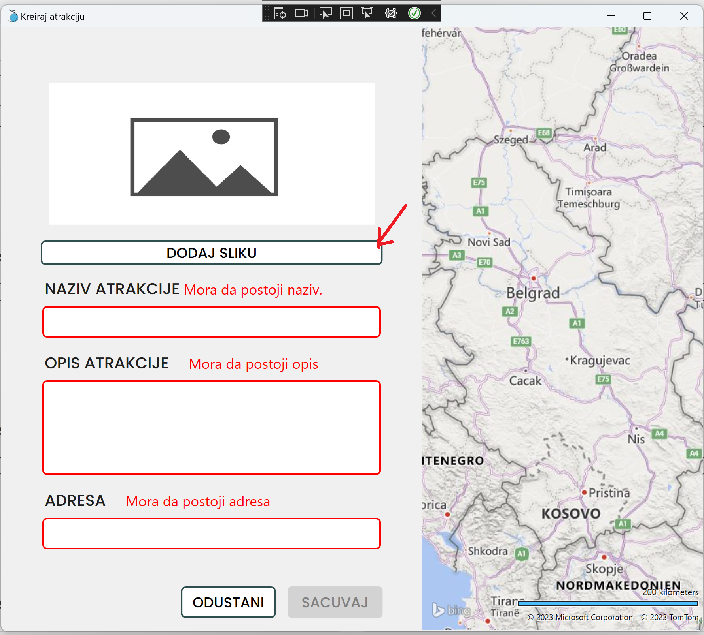
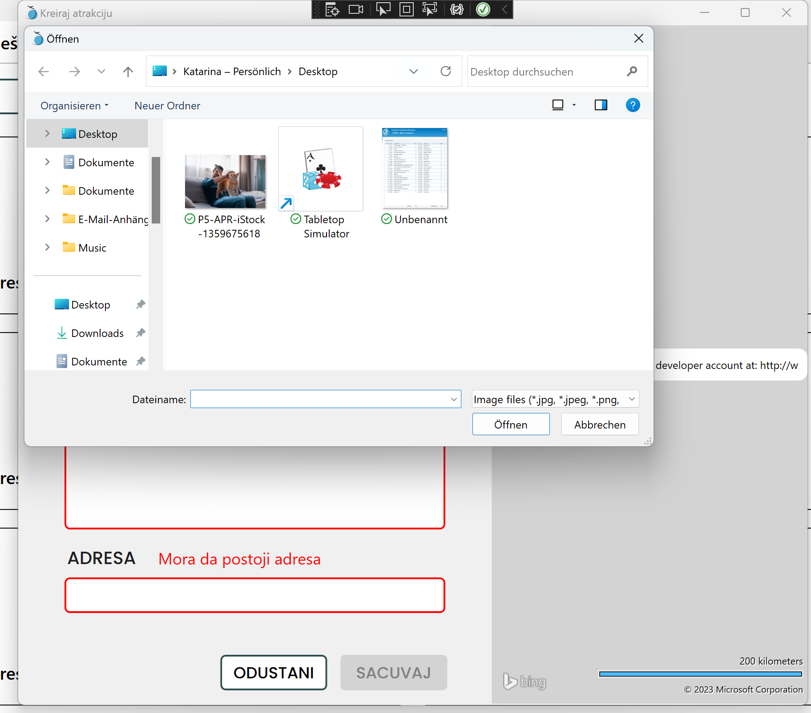
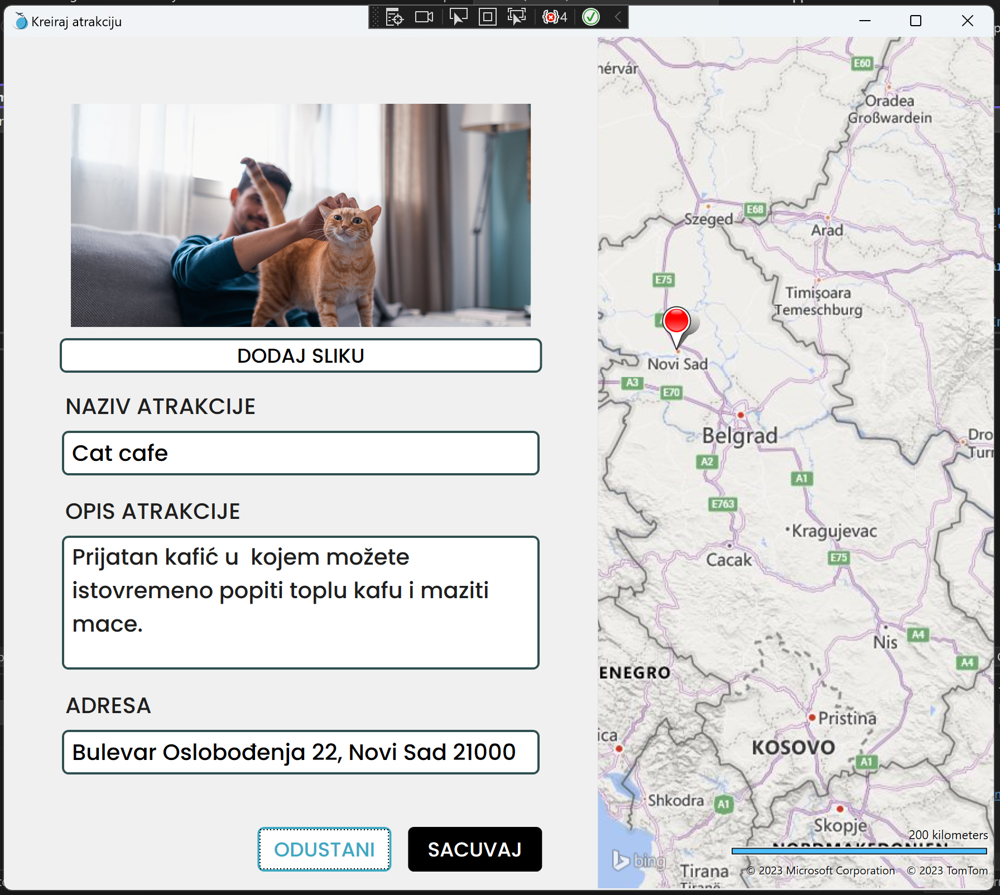
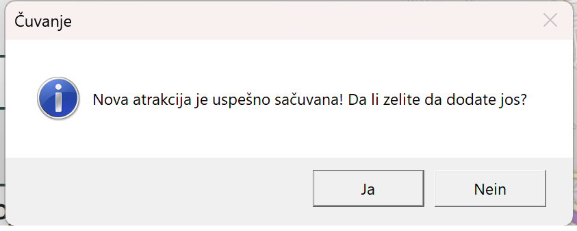
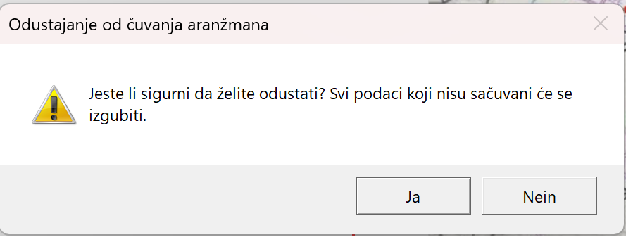

Kako doći do forme za kreiranje nove atrakcije?
1. Nakon što ste se prijavili na svoj nalog i otvorio Vam se glavni prozor aplikacije, kliknite mišem na naziv "Atrakcije", te se uverite da Vam se otvorio prikaz svih atrakcija, kao na sledećoj slici.
2. Sledeće kliknite mišem na dugme "Dodaj", kako biste otvorili novi prozor sa formom za Vašu atrakciju.

Alternativno, ako se nalazite u situaciji da tokom kreiranja novog aranžmana primetite da Vam atrakcija koju želite da dodate još ne postoji u sistemu i želite nabrzaka da ga dodate, kliknite na dugme "NOVA ATRAKCIJA", koje se nalazi iznad liste svih atrakcija u Vašoj formi.

3. Kada Vam se otvori forma za kreiranje nove atrakcije, primetićete da imate crvena polja, to je naznaka da su ona neispravna te da ne možete sačuvati novu atrakciju, dok ta polja ne popunite.
U slučaju da želite da dodate sliku za atrakciju, kliknite na dugme "DODAJ SLIKU", kako bi Vam se otvorio pretraživač fajl sistema Vašeg računara. Tu ćete moći da pretražite i izaberete želejnu fotografiju u prikladnom formatu.
(Za brži rad, dodavanje slike možete da pokrenete i pritiskom na kombinaciju tastera CTRL+O na Vašoj tastaturi)

4. Klikom na bilo koje polje za unos, moćićete da počnete da unosite podatke.
(Za brži rad, možete se kretati kroz polja za unos klikom na "tab" dugme na Vašoj tastaturi)
Nakon što unesete željenu vrednost, prestaće polje da se crveni, što naznačava da je polje sada ispravno i možete da nastavite dalje sa unosom podataka.
Nakon što unesete podatke za adresu u odgovarajuće polje i kliknete van tog polja, ako je adresa dovoljno precizna, na mapi će Vam se iscrtati odgovarajući pin.

U slučaju da ne znate tačnu adresu, ali znate gde se atrakcija nalazi na mapi, možete duplim klikom na mapi na odgovarajućoj lokaciji da postavite pin i dobaviće Vam se željena adresa i popuniti automatski u odgovarajućem polju.

5. Nakon što ste uneli sve potrebne podatke, primetićete da Vam je dugme za čuvanje promenilo boju, naznačavajući da sada možete da sačuvate Vašu atrakciju klikom na to dugme.
(Za brži rad, možete i jednostavno da pritisnete ENTER na Vašoj tastaturi)
Nakon toga će Vam se otvoriti prozor da potvrdi da li je uspešno sačuvana atrakcija. Postaviće Vam se pitanje da li želite da kreirate još. Klikom na DA, forma će se isprazniti ali ostati otvorena.
Klikom na NE, forma će se zatvoriti i vraćate se na poslednje otvoreni prozor.

7. Ako se ipak predomislite iz bilo kog razloga i ne želite da napravite novu atrakciju, možete klikom na dugme ODUSTANI da prekinete. Otvoriće Vam se prozor za potvrdu akcije. U slučaju da ste slučajno pošli da odustanete, možete prekinuti akciju.
(Za brži rad, možete i na tastaturu pritisnuti kombinaciju CTRL+X)
